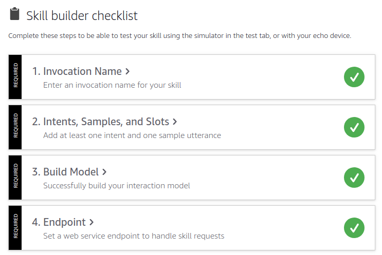

Introduction
First time I heard about Alexa / Echo üëÄ I loved the idea of having an assistant at home capable of playing music on demand, setting up alarms, giving the flash briefings, an so on.
Currently, I‚Äôm building a Voice App using Amazon Echo - Alexa and Google Home üíª.
That’s quite interesting challenge given the fact I’ll be using AWS Lambda function and NodeJS as part of the technology stack.
This post is intended to gather all my notes meanwhile I was learning and developing my first Voice App using Alexa Skills Kit. I thought it will be important to share this notes as I felt quite lost at the beginning.
Note: I’ll be using
JavaScriptandNodeJSas a development language and engine for my first Alexa Custom Skill.
Concepts
When I started looking at the documentation ü뮂Äçüíª, I realized there is a completely new vocabulary and concepts. Let‚Äôs see some of the concepts I learnt:
Alexa Skill: It is the basic unit of Voice App for Amazon Echo. So as a developer you can develop and publish a new Alexa Skill and as a end user you can search and install that Alexa Skill in your Amazon Echo. There are different kind of skills.Alexa SKills Kit: The Alexa Skills Kit (ASK) is a collection of self-service APIs, tools, documentation, and code samples that makes it fast and easy for you to add skills to Alexa.Alexa Skills Kit Developer Console: It is the online tool to Build, Manage, Test, Launch, Measure and Delete your Alexa Skills. You have to sign up for an Amazon Development Account in order to use it.Skill Id: Unique identifier for your skill. It is very useful when you need to connect your AWS Lambda function with your Skill through a trigger called Alexa Skill Kit.Invocation Name: It’s the name used by Alexa to open our app or skill.Intent: It’s a way to group common and reusable actions or intentions. An intent represents an action that fulfills a user’s spoken request. Intents can optionally have arguments called slots. Also is the basic unit of development for a custom Alexa Skill. Each custom Intent have to define the intent schema plus the code to handle that intent. There are some standard built-in intents.Utterances: A set of likely spoken phrases mapped to the intents. They are different ways to invoke or activate an intent. For example for CancelIntent, we have these utterances: cancel, never mind and forget it.Slots: A representative list of possible values for a slot. For example, the intentI want to travel to {citySlot}could have different values for citySlot like: Paris, Amsterdam, Brussels, and so on.Interaction Model: It is where you implement the logic for the skill, and you also define the voice interface through which users interact with the skill. To define the voice interface, you map users’ spoken input to the intents your cloud-based service can handle. It includes also Invocation Name, Intents and Slot Types.EndPoint: It is the place where we configure the ARN for AWS Lambda function that will handle the requests for the user interactions or intents. For example, we can define some custom Intents in Alexa Skills Kit Developer Console and then implement the logic for that intent in AWS Lambda function. Eventually we have to connect both using the EnpPoint feature available in Alexa Skills Kit Developer Console.ASK SDK: The ASK SDK v2 for Node.js makes it easier for you to build highly engaging skills. The most useful methods it provides to handle skill responses are:addRequestHandlers,addRequestInterceptors,addErrorHandlersandlambda.AWS SDK: It is important to notice the difference betweenASK SDK(useful to handle skill requests) andAWS SDK(useful to connect our skill with AWS Services). You can see more samples in the Alexa Skill Building Cookbook.ASK CLI: Alexa Skills Kit Command Line Interface (ASK CLI) could be installed using npm. It exposes some high-level commmands likeinit,new,deploy,clone,validate, andsimulatethat we can use in the command line. ASK CLI Command Reference.AWS CLI: Amazon Web Services Command Line Interface could be useful in some Alexa advanced projects that requires other AWS Services to be created.
Requirements
Once we are more familiar with the main concepts. Before starting to develop a custom skill, there are some requirements:
- Register for an Amazon Developer Account
- Register for an AWS Account
Note you can request for promotional credits on AWS for Alexa
- As we will be using NodeJS:
Project Structure
Once you have installed all the requirements on your laptop, let’s see what is the project structure or skeleton required for Alexa Skill. The project structure for Alexa Custom Skill is:
1 | skill.json // skill manifest to define metadata |
As a beginner in the Voice Apps world, it is important to note that this is the structure used to define our Skill metadata, our Interaction Model schema and our Handlers code. It is important to keep that structure like that because ask-cli will be using it in order to deploy to Alexa Skills Kit Developer Console and AWS Lambda. Further explanation about the files:
skill.json: where skill metadata lives. For example, skill_id or Lambda function ARN..ask/config: ask-cli will be required to automate the creation, publication and update for our interaction model or lambda function. This config file is where our ask cli config lives. Note that authentication config for lambda function could be handled separately.lambda/custom/*: where our intents handlers code lives. In order to test it we should deploy using ask-cli. We’ll see how later in the post. Here is where we’ll useask sdkto develop handlers for our intents.models/*: where our interaction model json definition lives. Whatever we define here as JSON format, we should implement the handlers in the lambda function code.
Starting templates / Code Samples
There are some üöÄ official boilerplates / code samples üöÄ to start with. All of them are github projects, so you can clone and start playing with them. I recommend to go through one of them and get it deployed and tested via your test environment provided by Alexa Skills Kit Developer Console:
IMPORTANT: Recently (April 2018), it was published the V2 for Alexa Skill Kit SDK. So, make sure that the code you are using in your sample is pointing to V2 and not V1.
❌ V1 uses
require("alexa-sdk")✅ V2 uses
require("ask-sdk-core")
Problems
As part of my up and running for my first Alexa Skill, I found some issues in the process, I documented some solutions:
❗ ️Problem 1 ❗️
A valid interaction model is required to test your skill there was an internal server error
Solution: Check in Alexa Skills Kit Developer Console your Skill builder checklist. Everyone of these 4 items should be check in green! 
❗️ Problem 2 ❗️
Error parsing the requested content. Please validate the enums in the request, which is a common cause for this exception
Other Resources
I hope these notes will help on clarify little bit the new concepts on Voice Apps.
Stay tunned ü§ò as I‚Äôll be publishing more post about advanced scenarios and deployments for Alexa Custom Skills!